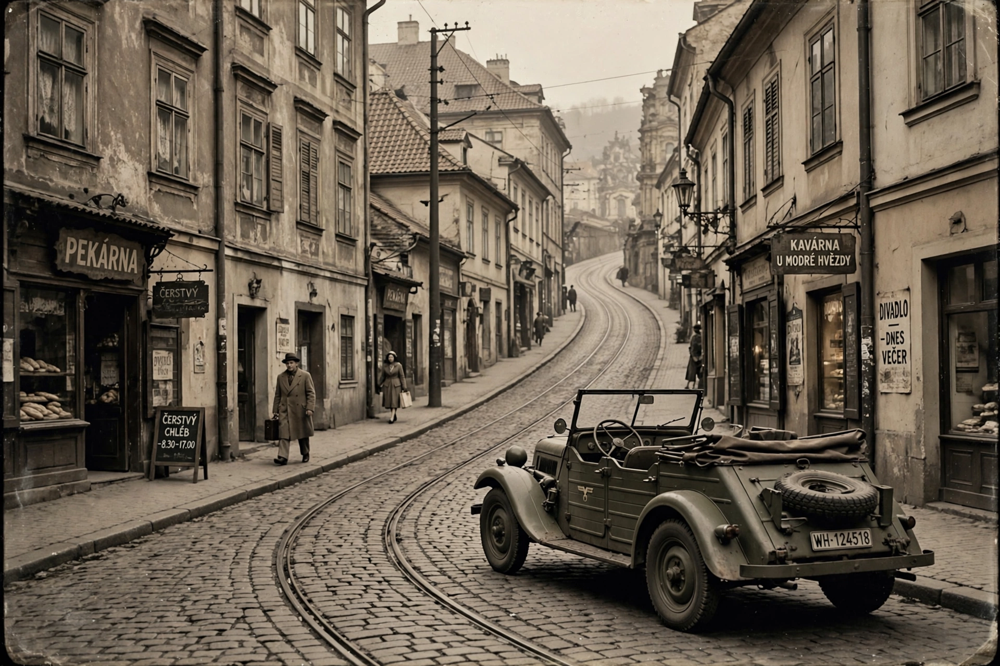

Operation Anthropoid
| Operation Anthropoid | |
| Date | 27 May 1942 |
|---|---|
| Location | Prague, Protectorate of Bohemia and Moravia |
| Target | SS-Obergruppenführer Reinhard Heydrich |
| Agents | Jozef Gabčík, Jan Kubiš (SOE-trained Czechoslovak soldiers) |
| Outcome | Heydrich wounded, died 4 June 1942 |

Operation Anthropoid was the code name for the assassination of Reinhard Heydrich, the Nazi Reich Protector of Bohemia and Moravia and a principal architect of the Holocaust, carried out in Prague on 27 May 1942 by Czechoslovak agents trained by Britain's Special Operations Executive. It was the only government-organised assassination of a senior Nazi leader during the Second World War.
The attack
Soldiers Jozef Gabčík and Jan Kubiš parachuted into Czechoslovakia in December 1941. On 27 May 1942 they ambushed Heydrich's open-topped Mercedes as it slowed for a hairpin bend in the Prague suburb of Libeň. Gabčík's Sten gun jammed, but Kubiš threw a converted anti-tank grenade that exploded against the car's rear wheel, driving fragments and upholstery fibres into Heydrich's body. Heydrich died of his wounds — probably aggravated by sepsis — on 4 June 1942.
Reprisals and last stand
The Nazis responded with brutal reprisals, destroying the villages of Lidice and Ležáky and murdering thousands of Czechs. Betrayed by Karel Čurda, the agents and their comrades were cornered on 18 June in the Saints Cyril and Methodius Cathedral in Prague, where they fought a day-long gun battle and died by suicide or in combat rather than be captured.
Legacy
The operation is commemorated by the National Memorial to the Heroes of the Heydrich Terror at the cathedral crypt and by several films, including Anthropoid (2016) and The Man with the Iron Heart (2017).